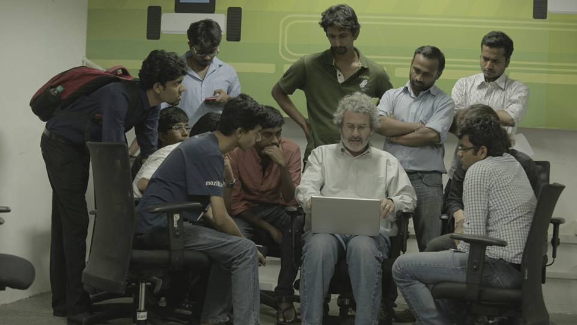
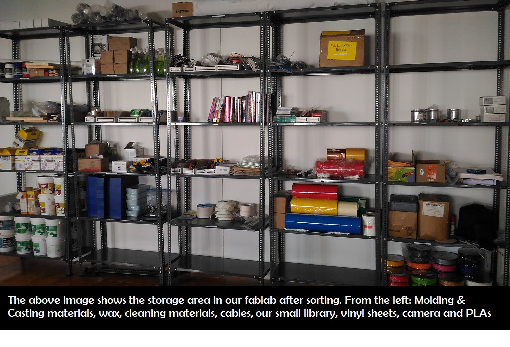

Week 1
The Pre Fab Academy- Learn Make Share
Day 1: The Pre Fab Academy- Learn Make Share
Date: 19th October 2015Everyone seemed really excited when Mr Francisco Sanchez, our trainer for the Pre Fab Academy started the class by giving the classical examples of What Digital Fabrication is all about. Important references were made to The Mathematical Theory of Communication and The Third Industrial Revolution, an article published in The Economist. Francisco then introduced himselves, and told his journey from being a Civil Engineering and how he got interest in Fab Academy. He then explained the projects that he did in his fab lab, The Beach Lab and the 9 principles of MIT Media Labs. Pre fab academy is the stepping stone towards the Fab Academy course and wherein all the topics are covered from its basics. The method of evaluation of performance in the pre fab academy is based on the overall performance in the course and on the way you document which is the same as fab academy. Francisco highlighted the importance of Learn Make Share, and the necessity of documenting the same. So by the end of the day I realized that it doesn’t matter whether I successfully complete the prefab or not, but yes I am going to learn really special here.
For your information our batch is the first batch in the world to attend the Prefab Academy. This one month workshop is specially customized for the Kerala as per the request from Kerala Startup Mission. Sincere thanks to Prof Neil Gershenfeld, Ms Sherry Lassitter, Mr Francisco Sanchez, Mr Luciano Betoldi, Kerala Startup Mission and Government of Kerala.
Day 2: From Windows to Ubuntu (The unexpected Twist)
Date : 20th October 2015 For the Pre Fab Academy it is essential to keep a seperate note book for writing down all the points during the course of the workshop. Francisco insisted to use the same notebook if I am attending the fab academy. The documentation shall be done in such a way that in case of doing a machine operation list as follows- Name of the work
- Name of the machine
- Spec Settings Measurements (if any)
Today’s Assignment: Preparing the laptop ready for the pre fab
Having never used ubuntu before, when Fracisco asked to install Ubuntu, it was like What am I going to do with this.My Laptop's Spec:
Dell Insprion, Dell Inspiron Processor: Intel® Core™ i5-3210M CPU @ 2.50GHz × 4 with 4 GB RAM, 64 bit
Installing Ubuntu 14.04 The important thing before installation of Ubuntu is to create partitions or else I will lose my windows and all its documents. So for installing Ubuntu I am doing the partition. Go to Manange -> Computer Management-> Storage and I saw the way how my hardisk is divided into various partitions. My hardisk had 6 partitions and I merged 2 drives which had free space resulting in a new space of 160GB. After plugging in the pendrive loaded with Ubuntu 14.04 restart the computer. Press F12 and get into Boot Settings. Navigate through the top menu bar and you can find Legacy Boot [Enable] [Disable] Press F10 and Save. Ubuntu opens up next objective is to create three partitions namely /, /home, and swap area.
For / Memory : Primary Ext 24. Allocate space as per your choice (50 GB)
For /home
Memory: logical Ext 24 Space allocated: 100 GB
For swap area Space allocated: 4 GB Install Ubuntu
Once I completed installing ubuntu, update the OS by opening the Terminal (Ctrl+alt+t). apt-get update
It showed “permission denied” and hence I was asked to use the below command sudo apt-get update (sudo means super user do => gives admin rights)
Once I finished updating Ubuntu, the next step was to download the dependencies and for which log on to www.kokompe.cba.mit.edu ***Screen Shot***
After that I download the fab modules. Unzip the fab module, open the folder, right click select open terminal here. I couldnt find it you upon right click. So I had to install nautilus (file manager) sudo apt-get install nautilus This enables me to open terminal directly with in the folder by staying inside the directory itself.
Install fab modules by downloading the fab_src.zip After downloading unzip and install. Upon completion of installation open the file directory and enter
make fab
sudo make install
For more details refer http://kokompe.cba.mit.edu/downloads
Now I have the fab modules ready. The fab modules enable my laptop to communicate with all the machines in fablab. Francisco gave the list of essential software which I am listing below and I installed one after the other. He recommended to download the softwares from their respective websites instead of using the Ubuntu software center.
1. Cura
2. GIMP
3. Inkscape
4. Openscad
5. Arduino IDE (https://www.arduino.cc/en/Main/Software)
6. Attiny addon for arduino IDE (Download this from the website of highlow tech. Here is the link http://highlowtech.org/?p=1695)
7. qcad
8. git (Git is a widely used version control system for software development. It is a distributed revision control system with an emphasis on speed, data integrity, and support for distributed, non-linear workflows. Git was initially designed and developed by Linus Torvalds for Linux kernel development in 2005. Source:https://en.wikipedia.org/wiki/Git_%28software%29) https://git-scm.com/downloads
9. eagle
10. kicad
11. wine
12. Partworks in wine
13. Installing Antimony :
The super cool designing software Fab Academy highly recommends is Antimony. I saw Antimony for the first when Prof Neil Gershenfeld visited the 2 fablabs in Kerala.
I was one among the lucky guys who got a chance to listen to him for 10 min session on Antimony. I didn’t understand what exactly it was then. So Antimony is a software created by Mkeeter.
For Installation log on to https://github.com/mkeeter/antimony
Select build instructions and that guided me to https://github.com/mkeeter/antimony/blob/develop/BUILDING.md
In this page all the specific requirements for written down.
1. Install Qt5 (http://www.qt.io/download-open-source/#section-3)
2. Then use the following commands
sudo apt-get install build-essential sudo apt-get install libpng-dev
sudo apt-get install python3-dev
sudo apt-get install libboost-all-dev
sudo apt-get install libgl1-mesa-dev
sudo apt-get install lemon
sudo apt-get install flex
sudo add-apt-repository ppa:ubuntu-toolchain-r/test
sudo apt-get update
sudo apt-get install gcc-4.9 g++-4.9
sudo update-alternatives --install /usr/bin/gcc gcc /usr/bin/gcc-4.9 60 --slave /usr/bin/g++ g++ /usr/bin/g++-4.9
Once that was done I had to clone my laptop with the repository of github antimony repository and for which I used the following commands
git clone https://github.com/mkeeter/antimony
cd antimony
mkdir build
cd build
~/Qt5.5.0/5.5/gcc_64/bin/qmake ../sb.pro (make changes in Qt version if needed)
make -j8
./app/antimony
Antimony didn’t got installed in my computer and i am finding errors for the same today. But after trying three times finally got it installed. I think I missed few steps in between that made it wrong.
Well that was really a relief !!!!
Here is the link to basic tutorial of Antimony http://www.mattkeeter.com/projects/antimony/3/
The last thing for the day is to download kokopelli.retro.zip (shared by Francisco) Extract it.
make fab
cd bin ./kokopelli
Day 3:Setting up the Tone
Date: October 21, 2015
So by Day 2 the laptop was ready with all the softwares and dependencies and its all set for the pre fab. Social Networking was never a serious concern for me and i was only used to facebook and twitter. Apart from this today, I came to realize the importance of websites like github. Then I created accounts in the below listed websites as directed by our Guru. So that’s the assignment for today.
1. Fablabs.io (Global network of fablabs ) (https://www.fablabs.io/users/3602)
2. git.fabcloud.io
3. Google
4. Youtube/Vimeo
5. Github
6. Dropbox
7. Sketchfab
Creating the Github Repository
Listing down the steps I followed one by one
1. sudo apt-get install git-all
2. Clone the repository
git clone https://github.com/username/username.github.io 3. Enter the project folder and add an index.html file
Then cd username.github.io echo "Hello World" > index.html 4. Pushing the file to the repository git add --all git commit -m "Initial commit" git push -u origin master
In the index.html file I wrote a simple script to display hello world and I was able to see hello world in my page varungeethamony.github.io The purpose of creating this repository is to create a website for documentation of the pre fab experience. Francisco explained in detail about the importance of documentation and why should I do it. In Fab Academy It is very important to document everything. It is considered so important that even if you don’t do it document it. Francisco shared his fab academy experience with all the participants and how he documented. For documentation I am only having experience of blogging and is not aware of HTML and web design. For beginners Francisco suggested Edx for taking courses on HTML. He also shared with us few sites that would help me built up a web page on my own.He also suggested some website wherein I ll be able to get free templates for my website. Photographs play a key role in documentation. I need to ensure that the photographs that I am going to use for documentation shouldn’t be blurred, confusing and flashy. One who reads my documentation should be able to understand everything easily. All the photographs should be of some decent size and shouldn’t look odd to others. If I need to upload any videos then I need to use Vimeo or Youtube. So one thing that I deciding now is I am not going to use any templates for my website instead, even though it might look simpler I am going desing it on my own.
Day 4: Its your fablab keep it clean
Today’s assignment is to prepare the lab and make it clean prior to pre fab classes. So before we start cleaning Francisco addressed to us regarding the importance of time management. Fablab should be clean and everything like machines, tools, consumables etc should be arranged in a proper manner always. By doing so it reduces confusion and enables users to save time by not to run here and there looking for something. Our lab was a mess as per our Guru and for cleaning and making it proper he divided the participants to groups. Me, Abhilash and Micheal where in charge of the molding and casting area. The area that we had to prepare had 4 big racks with 5 tier each. Initially we sorted out all the items and started arranging it from one side of the rack. It took us around 1 hr for arranging the whole rack. Once we did it we made list of the items placed in the racks. So within 2 hours our lab was looking clean and well arranged. ****** And let the adventure begin !!!